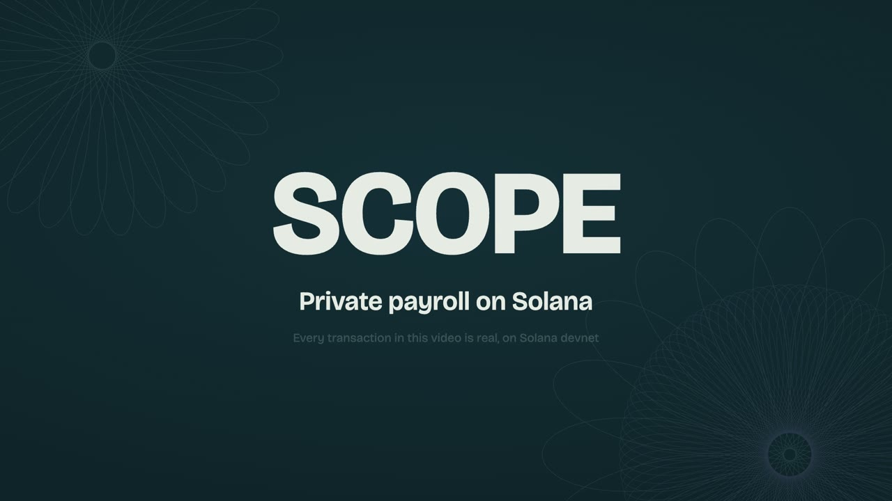
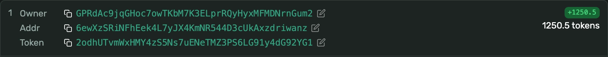
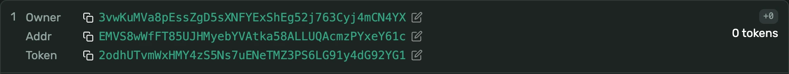

Payroll on Solana, without publishing salaries.
SCOPE pays many people from one visible payer with encrypted amounts. A recipient who wants it gets a fresh account for every payment, set up by the payer alone, so nothing on chain names them. No pool, no relayer: the money stays an ordinary Token-2022 token.
Live on Solana devnet: program SCoPEvf7…E5hT

Two minutes, real devnet transactionsWhy not just pay on chain?
Because every payment is a public record. Here is the same token, paid two ways on devnet, as anyone sees it in Solana Explorer.
An ordinary transfer who got paid, and exactly how much

A SCOPE payment of 800 a fresh owner, and nothing to read

Transactions 2yyie5d4 and 5XphEUrt, 13 October 2026.
Token-2022 confidential transfers
Hide the amount, but the recipient's account is fixed. "Acme pays Alice every month" stays public.
Stealth addresses
Give each payment a fresh address, but the amount is public, and the recipient would have to set up every encrypted account themselves.
SCOPE joins them
The payer creates and encrypts the recipient's one-time account alone, in the same transaction that pays it. The recipient only has to share one address, once.
Who can see what?
One real payment, Acme paying Bob 800 dUSD. Pick who is looking.
How does a payment work?
Four steps, one transaction on each side. These commands and timings are from the devnet run in the demo.
Register
Bob creates his keys once and gives Acme one address. Off chain, no SOL needed.
scope registeroncePay
One transaction per person creates Bob's one-time account, encrypts it to keys only the two parties can derive, hands it to Bob's one-time key and pays in.
scope pay --input payroll.csv2 people in 6 sCollect
Bob's scanner finds his payment with a one-byte hint, then moves it to a fresh account. Acme prepaid the fee, so Bob needs no SOL.
scope scan scope sweep --announcement …1 s to scan, 7 s to collectProve
A receipt opens one payment for an auditor, who checks it against the chain without trusting whoever handed it over.
scope disclose … scope verify receipt.jsonabout 1 s each
What does it cost?
Measured on devnet for one stealth payment, the kind that hides the recipient.
| Measure | Value | Note |
|---|---|---|
| Payment transaction | 3,006 bytes | of the 4,096 a v1 transaction allows; every proof rides inline |
| Compute | 257,432 CU | payment; the recipient's collect used 276,941 |
| SOL the payer fronts | 0.0086 SOL | 8,630,800 lamports; 4,008,120 of it is rent that comes back when Bob collects |
| SOL the recipient needs | 0 | the payer funds the collect transaction |
| Plain payment | 2,403 bytes | to a recipient with a known confidential account; fee only |
What does it not do?
SCOPE hides amounts and recipients from the public. It is not anonymity, and it is not a mixer.
- The payer is visibleOn purpose: it keeps the rail outside mixer territory and makes every payment provable.
- The payer knows where it paidAcme chose Bob and the amount. SCOPE hides that from everyone else, not from Acme.
- Timing and headcount showPayments in one run land close together from one payer, so their number is visible.
- The issuer can hold an auditor keyIf the mint has one, its holder can decrypt every amount on that mint.
- No major stablecoin fits yetStealth payments need a mint that approves confidential accounts itself, with no transfer fee or hook.
- Privacy ends where the recipient actsThe first public withdrawal, or a spend to someone who knows Bob, ties his fresh account to him.
- Collect destinations are recognisableBob's fresh account is created with a fixed seed, so it marks its owner as a SCOPE recipient.
- No external review yetThe key derivations have had no external cryptographic review.
Every limit, with its evidence: privacy.md and overview.md.